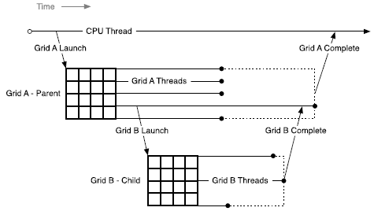

4.18. CUDA Dynamic Parallelism#
4.18.1. Introduction#
4.18.1.1. Overview#
CUDA dynamic parallelism - often abbreviated CDP - is a feature of the CUDA programming model that enables code running on the GPU to create new GPU work. That is, new work can be added to the GPU in the form of additional kernel launches from device code already running on the GPU. This feature can reduce the need to transfer execution control and data between host and device, as launch configuration decisions can be made at runtime by threads executing on the device.
Data-dependent parallel work can be generated by a kernel at run-time. Before CDP was added to CUDA, some algorithms and programming patterns required modifications to eliminate recursion, irregular loop structure, or other constructs that do not fit a flat, single-level of parallelism. These program structures may be expressed more naturally using CUDA dynamic parallelism.
Note
This section documents the updated version of CUDA Dynamic Parallelism, sometimes called CDP2, which is the default in CUDA 12.0 and later. CDP2 is the only version of CUDA dynamic parallelism available on devices of CC 9.0 and higher. Developers can still opt in to the legacy CUDA Dynamic Parallelism, CDP1, for devices of CC lower than 9.0 with the compiler argument -DCUDA_FORCE_CDP1_IF_SUPPORTED. CDP1 documentation can be found in Legacy versions of the CUDA Programming Guide. CDP1 is slated for removal from a future version of CUDA.
4.18.2. Execution Environment#
Dynamic parallelism in CUDA allows GPU threads to configure, launch, and implicitly synchronize new grids. A grid is an instance of a kernel launch, including the specific shape of the thread blocks and the grid of thread blocks. The distinction between a kernel function itself and the specific invocation of that kernel, i.e. a grid, is important to note in the following sections.
4.18.2.1. Parent and Child Grids#
A device thread that configures and launches a new grid belongs to the parent grid. The new grid that is created by the invocation is called a child grid.
The invocation and completion of child grids is properly nested, meaning that the parent grid is not considered complete until all child grids created by its threads have completed, and the runtime guarantees an implicit synchronization between the parent and child.

Figure 54 Parent-Child Launch Nesting#
4.18.2.2. Scope of CUDA Primitives#
CUDA Dynamic Parallelism relies on the CUDA Device Runtime, which enables calling a limited set of APIs which are syntactically similar to the CUDA Runtime API, but available in device code. The behavior of the device runtime APIs are similar to their host counterparts, but there are some differences. These differences are captured in the table in section API Reference.
On both host and device, the CUDA runtime offers an API for launching kernels and for tracking dependencies between launches via streams and events. On the device, launched kernels and CUDA objects are visible to all threads in the invoking grid. This means, for example, that a stream may be created by one thread and used by any other thread in the same grid. However, CUDA objects such as streams and events which were created on by device API calls are only valid within the grid where they were created.
4.18.2.3. Streams and Events#
CUDA Streams and Events allow control over dependencies between kernel launches: kernels launched into the same stream execute in-order, and events may be used to create dependencies between streams. Streams and events created on the device serve this exact same purpose.
Streams and events created within a grid exist within grid scope, but have undefined behavior when used outside of the grid where they were created. As described above, all work launched by a grid is implicitly synchronized when the grid exits; work launched into streams is included in this, with all dependencies resolved appropriately. The behavior of operations on a stream that has been modified outside of grid scope is undefined.
Streams and events created on the host have undefined behavior when used within any kernel, just as streams and events created by a parent grid have undefined behavior if used within a child grid.
4.18.2.4. Ordering and Concurrency#
The ordering of kernel launches from the device runtime follows CUDA Stream ordering semantics. Within a grid, all kernel launches into the same stream (with the exception of The Fire-and-Forget Stream) are executed in-order. With multiple threads in the same grid launching into the same stream, the ordering within the stream is dependent on the thread scheduling within the grid, which may be controlled with synchronization primitives such as __syncthreads().
Note that while named streams are shared by all threads within a grid, the implicit NULL stream is only shared by all threads within a thread block. If multiple threads in a thread block launch into the implicit stream, then these launches will be executed in-order. If threads in different thread blocks launch into the implicit stream, these launches may be executed concurrently. If concurrency is desired for launches from multiple threads within a thread block, explicit named streams should be used.
The device runtime introduces no new concurrency guarantees within the CUDA execution model. That is, there is no guarantee of concurrent execution between any number of different thread blocks on a device.
The lack of concurrency guarantee extends to a parent grid and their child grids. When a parent grid launches a child grid, the child may start to execute once stream dependencies are satisfied and hardware resources are available, but is not guaranteed to begin execution until the parent grid reaches an implicit synchronization point.
Concurrency may vary as a function of device configuration, application workload, and runtime scheduling. It is therefore unsafe to depend on any concurrency between different thread blocks.
4.18.3. Memory Coherence and Consistency#
Parent and child grids share the same global and constant memory storage, but have distinct local and shared memory. The following table shows which memory spaces allow parent and child to access via the same pointers. Child grids can never access the local or shared memory of parent grids, nor can parent grids access local or shared memory of child grids.
Memory Space |
Parent/Child use same pointers? |
|---|---|
Global Memory |
Yes |
Mapped Memory |
Yes |
Local Memory |
No |
Shared Memory |
No |
Texture Memory |
Yes (read-only) |
4.18.3.1. Global Memory#
Parent and child grids have coherent access to global memory, with weak consistency guarantees between child and parent. There is only one point of time in the execution of a child grid when its view of memory is fully consistent with the parent thread: at the point when the child grid is invoked by the parent.
All global memory operations in the parent thread prior to the child grid’s invocation are visible to the child grid. With the removal of cudaDeviceSynchronize(), it is no longer possible to access the modifications made by the threads in the child grid from the parent grid. The only way to access the modifications made by the threads in the child grid before the parent grid exits is via a kernel launched into the cudaStreamTailLaunch stream.
In the following example, the child grid executing child_launch is only guaranteed to see the modifications to data made before the child grid was launched. Since thread 0 of the parent is performing the launch, the child will be consistent with the memory seen by thread 0 of the parent. Due to the first __syncthreads() call, the child will see data[0]=0, data[1]=1, …, data[255]=255 (without the __syncthreads() call, only data[0]=0 would be guaranteed to be seen by the child). The child grid is only guaranteed to return at an implicit synchronization. This means that the modifications made by the threads in the child grid are never guaranteed to become available to the parent grid. To access modifications made by child_launch, a tail_launch kernel is launched into the cudaStreamTailLaunch stream.
__global__ void tail_launch(int *data) {
data[threadIdx.x] = data[threadIdx.x]+1;
}
__global__ void child_launch(int *data) {
data[threadIdx.x] = data[threadIdx.x]+1;
}
__global__ void parent_launch(int *data) {
data[threadIdx.x] = threadIdx.x;
__syncthreads();
if (threadIdx.x == 0) {
child_launch<<< 1, 256 >>>(data);
tail_launch<<< 1, 256, 0, cudaStreamTailLaunch >>>(data);
}
}
void host_launch(int *data) {
parent_launch<<< 1, 256 >>>(data);
}
4.18.3.2. Mapped Memory#
Mapped system memory has identical coherence and consistency guarantees to global memory, and follows the semantics detailed above. A kernel may not allocate or free mapped memory, but may use pointers to mapped memory passed in from the host program.
4.18.3.4. Local Memory#
Local memory is private storage for an executing thread, and is not visible outside of that thread. It is illegal to pass a pointer to local memory as a launch argument when launching a child kernel. The result of dereferencing such a local memory pointer from a child grid is undefined.
For example the following is illegal, with undefined behavior if x_array is accessed by child_launch:
int x_array[10]; // Creates x_array in parent's local memory
child_launch<<< 1, 1 >>>(x_array);
It is sometimes difficult for a programmer to be aware of when a variable is placed into local memory by the compiler. As a general rule, all storage passed to a child kernel should be allocated explicitly from the global-memory heap, either with cudaMalloc(), new() or by declaring __device__ storage at global scope. For example:
// Correct - "value" is global storage
__device__ int value;
__device__ void x() {
value = 5;
child<<< 1, 1 >>>(&value);
}
// Invalid - "value" is local storage
__device__ void y() {
int value = 5;
child<<< 1, 1 >>>(&value);
}
4.18.3.4.1. Texture Memory#
Writes to the global memory region over which a texture is mapped are incoherent with respect to texture accesses. Coherence for texture memory is enforced at the invocation of a child grid and when a child grid completes. This means that writes to memory prior to a child kernel launch are reflected in texture memory accesses of the child. Similarly to Global Memory above, writes to memory by a child are never guaranteed to be reflected in the texture memory accesses by a parent. The only way to access the modifications made by the threads in the child grid before the parent grid exits is via a kernel launched into the cudaStreamTailLaunch stream. Concurrent accesses by parent and child may result in inconsistent data.
4.18.4. Programming Interface#
4.18.4.1. Basics#
The following example shows a simple Hello World program incorporating dynamic parallelism:
#include <stdio.h>
__global__ void childKernel()
{
printf("Hello ");
}
__global__ void tailKernel()
{
printf("World!\n");
}
__global__ void parentKernel()
{
// launch child
childKernel<<<1,1>>>();
if (cudaSuccess != cudaGetLastError()) {
return;
}
// launch tail into cudaStreamTailLaunch stream
// implicitly synchronizes: waits for child to complete
tailKernel<<<1,1,0,cudaStreamTailLaunch>>>();
}
int main(int argc, char *argv[])
{
// launch parent
parentKernel<<<1,1>>>();
if (cudaSuccess != cudaGetLastError()) {
return 1;
}
// wait for parent to complete
if (cudaSuccess != cudaDeviceSynchronize()) {
return 2;
}
return 0;
}
This program may be built in a single step from the command line as follows:
$ nvcc -arch=sm_75 -rdc=true hello_world.cu -o hello -lcudadevrt
4.18.4.2. C++ Language Interface for CDP#
The language interface and API available to CUDA kernels using CUDA C++ for Dynamic Parallelism is called the CUDA Device Runtime.
Where possible the syntax and semantics of the CUDA Runtime API have been retained in order to facilitate ease of code reuse for routines that may run in either the host or device environments.
As with all code in CUDA C++, the APIs and code outlined here is per-thread code. This enables each thread to make unique, dynamic decisions regarding what kernel or operation to execute next. There are no synchronization requirements between threads within a block to execute any of the provided device runtime APIs, which enables the device runtime API functions to be called in arbitrarily divergent kernel code without deadlock.
4.18.4.2.1. Device-Side Kernel Launch#
Kernels may be launched from the device using the standard CUDA <<< >>> syntax:
kernel_name<<< Dg, Db, Ns, S >>>([kernel arguments]);
Dgis of typedim3and specifies the dimensions and size of the gridDbis of typedim3and specifies the dimensions and size of each thread blockNsis of typesize_tand specifies the number of bytes of shared memory that is dynamically allocated per thread block for this call in addition to statically allocated memory.Nsis an optional argument that defaults to 0.Sis of typecudaStream_tand specifies the stream associated with this call. The stream must have been allocated in the same grid where the call is being made.Sis an optional argument that defaults to the NULL stream.
4.18.4.2.1.1. Launches are Asynchronous#
Identical to host-side launches, all device-side kernel launches are asynchronous with respect to the launching thread. That is to say, the <<<>>> launch command will return immediately and the launching thread will continue to execute until it hits an implicit launch-synchronization point, such as at a kernel launched into the cudaStreamTailLaunch stream (The Tail Launch Stream). The child grid may begin execution at any time after launch, but is not guaranteed to begin execution until the launching thread reaches an implicit launch-synchronization point.
Similar to host-side launch, work launched into separate streams may run concurrently, but actual concurrency is not guaranteed. Programs that depend upon concurrency between child kernels are not supported by the CUDA programming model and will have undefined behavior.
4.18.4.2.1.2. Launch Environment Configuration#
All global device configuration settings (for example, shared memory and L1 cache size as returned from cudaDeviceGetCacheConfig(), and device limits returned from cudaDeviceGetLimit()) will be inherited from the parent. Likewise, device limits such as stack size will remain as-configured.
For host-launched kernels, per-kernel configurations set from the host will take precedence over the global setting. These configurations will be used when the kernel is launched from the device as well. It is not possible to reconfigure a kernel’s environment from the device.
4.18.4.2.2. Events#
Only the inter-stream synchronization capabilities of CUDA events are supported. This means that cudaStreamWaitEvent() is supported, but cudaEventSynchronize(), cudaEventElapsedTime(), and cudaEventQuery() are not. As cudaEventElapsedTime() is not supported, cudaEvents must be created via cudaEventCreateWithFlags(), passing the cudaEventDisableTiming flag.
As with streams, event objects may be shared between all threads within the grid which created them but are local to that grid and may not be passed to other kernels. Event handles are not guaranteed to be unique between grids, so using an event handle within a grid that did not create it will result in undefined behavior.
4.18.4.2.3. Synchronization#
It is up to the program to perform sufficient inter-thread synchronization, for example via a CUDA Event, if the calling thread is intended to synchronize with child grids invoked from other threads.
As it is not possible to explicitly synchronize child work from a parent thread, there is no way to guarantee that changes occurring in child grids are visible to threads within the parent grid.
4.18.4.2.4. Device Management#
Only the device on which a kernel is running will be controllable from that kernel. This means that device APIs such as cudaSetDevice() are not supported by the device runtime. The active device as seen from the GPU (returned from cudaGetDevice()) will have the same device number as seen from the host system. The cudaDeviceGetAttribute() call may request information about another device as this API allows specification of a device ID as a parameter of the call. Note that the catch-all cudaGetDeviceProperties() API is not offered by the device runtime - properties must be queried individually.
4.18.5. Programming Guidelines#
4.18.5.1. Performance#
4.18.5.1.1. Dynamic-parallelism-enabled Kernel Overhead#
System software which is active when controlling dynamic launches may impose an overhead on any kernel which is running at the time, whether or not it invokes kernel launches of its own. This overhead arises from the device runtime’s execution tracking and management software and may result in decreased performance. This overhead is, in general, incurred for applications that link against the device runtime library.
4.18.5.2. Implementation Restrictions and Limitations#
Dynamic Parallelism guarantees all semantics described in this document, however, certain hardware and software resources are implementation-dependent and limit the scale, performance and other properties of a program which uses the device runtime.
4.18.5.2.1. Runtime#
4.18.5.2.1.1. Memory Footprint#
The device runtime system software reserves memory for various management purposes, in particular a reservation for tracking pending grid launches. Configuration controls are available to reduce the size of this reservation in exchange for certain launch limitations. See Configuration Options, below, for details.
4.18.5.2.1.2. Pending Kernel Launches#
When a kernel is launched, all associated configuration and parameter data is tracked until the kernel completes. This data is stored within a system-managed launch pool.
The size of the fixed-size launch pool is configurable by calling cudaDeviceSetLimit() from the host and specifying cudaLimitDevRuntimePendingLaunchCount.
4.18.5.3. Compatibility and Interoperability#
CDP2 is the default. Functions can be compiled with -DCUDA_FORCE_CDP1_IF_SUPPORTED to opt-out of using CDP2 on devices of compute capability less than 9.0.
Function compiler with CUDA 12.0 and newer (default) |
Function compiled with pre-CUDA 12.0 or with CUDA 12.0 and newer with |
|
|---|---|---|
Compilation |
Compile error if device code references |
Compile error if code references |
Compute capability < 9.0 |
New interface is used. |
Legacy interface is used. |
Compute capability 9.0 and higher |
New interface is used. |
New interface is used. If function references |
Functions using CDP1 and CDP2 may be loaded and run simultaneously in the same context. The CDP1 functions are able to use CDP1-specific features (e.g. cudaDeviceSynchronize) and CDP2 functions are able to use CDP2-specific features (e.g. tail launch and fire-and-forget launch).
A function using CDP1 cannot launch a function using CDP2, and vice versa. If a function that would use CDP1 contains in its call graph a function that would use CDP2, or vice versa, cudaErrorCdpVersionMismatch would result during function load.
The behavior of legacy CDP1 is not included in this document. For information on CDP1, refer back to a legacy version of the CUDA Programming Guide
4.18.6. Device-side Launch from PTX#
The previous sections have discussed using the CUDA Device Runtime to achieve dynamic parallelism. Dynamic parallelism can also be performed from PTX. For the programming language and compiler implementers who target Parallel Thread Execution (PTX) and plan to support Dynamic Parallelism in their language, this section provides the low-level details related to supporting kernel launches at the PTX level.
4.18.6.1. Kernel Launch APIs#
Device-side kernel launches can be implemented using the following two APIs accessible from PTX: cudaLaunchDevice() and cudaGetParameterBuffer(). cudaLaunchDevice() launches the specified kernel with the parameter buffer that is obtained by calling cudaGetParameterBuffer() and filled with the parameters to the launched kernel. The parameter buffer can be NULL, i.e., no need to invoke cudaGetParameterBuffer(), if the launched kernel does not take any parameters.
4.18.6.1.1. cudaLaunchDevice#
At the PTX level, cudaLaunchDevice()needs to be declared in one of the two forms shown below before it is used.
// PTX-level Declaration of cudaLaunchDevice() when .address_size is 64
.extern .func(.param .b32 func_retval0) cudaLaunchDevice
(
.param .b64 func,
.param .b64 parameterBuffer,
.param .align 4 .b8 gridDimension[12],
.param .align 4 .b8 blockDimension[12],
.param .b32 sharedMemSize,
.param .b64 stream
)
;
The CUDA-level declaration below is mapped to one of the aforementioned PTX-level declarations and is found in the system header file cuda_device_runtime_api.h. The function is defined in the cudadevrt system library, which must be linked with a program in order to use device-side kernel launch functionality.
// CUDA-level declaration of cudaLaunchDevice()
extern "C" __device__
cudaError_t cudaLaunchDevice(void *func, void *parameterBuffer,
dim3 gridDimension, dim3 blockDimension,
unsigned int sharedMemSize,
cudaStream_t stream);
The first parameter is a pointer to the kernel to be launched, and the second parameter is the parameter buffer that holds the actual parameters to the launched kernel. The layout of the parameter buffer is explained in Parameter Buffer Layout, below. Other parameters specify the launch configuration, i.e., as grid dimension, block dimension, shared memory size, and the stream associated with the launch (please refer to Kernel Configuration for the detailed description of launch configuration.
4.18.6.1.2. cudaGetParameterBuffer#
cudaGetParameterBuffer() needs to be declared at the PTX level before it’s used. The PTX-level declaration must be in one of the two forms given below, depending on address size:
// PTX-level Declaration of cudaGetParameterBuffer() when .address_size is 64
.extern .func(.param .b64 func_retval0) cudaGetParameterBuffer
(
.param .b64 alignment,
.param .b64 size
)
;
The following CUDA-level declaration of cudaGetParameterBuffer() is mapped to the aforementioned PTX-level declaration:
// CUDA-level Declaration of cudaGetParameterBuffer()
extern "C" __device__
void *cudaGetParameterBuffer(size_t alignment, size_t size);
The first parameter specifies the alignment requirement of the parameter buffer and the second parameter the size requirement in bytes. In the current implementation, the parameter buffer returned by cudaGetParameterBuffer() is always guaranteed to be 64- byte aligned, and the alignment requirement parameter is ignored. However, it is recommended to pass the correct alignment requirement value - which is the largest alignment of any parameter to be placed in the parameter buffer - to cudaGetParameterBuffer() to ensure portability in the future.
4.18.6.2. Parameter Buffer Layout#
Parameter reordering in the parameter buffer is prohibited, and each individual parameter placed in the parameter buffer is required to be aligned. That is, each parameter must be placed at the nth byte in the parameter buffer, where n is the smallest multiple of the parameter size that is greater than the offset of the last byte taken by the preceding parameter. The maximum size of the parameter buffer is 4KB.
For a more detailed description of PTX code generated by the CUDA compiler, please refer to the PTX-3.5 specification.